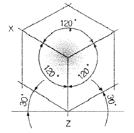
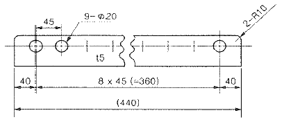
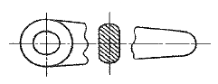
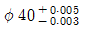
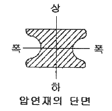

압연기능사 (2010-07-11 기출문제)
1과목: 금속재료일반
1. 다음 중 연강의 탄소함량은 약 몇 % 인가?
- 0.14
- 0.45
- 0.55
- 0.85
(정답률: 79%)

2. 액상(L)의 순철을 응고 냉각시킬 때 변태의 순서를 옳게 나타낸 것은?
- L → γ철 → δ철 → α철
- L → δ철 → γ철 → α철
- L → δ철 → α철 → γ철
- L → γ철 → α철 → δ철
(정답률: 76%)
3. 빛 대신 파장이 짧은 전자선을 이용하며 전자 렌즈로 상을 확대하여 형성시키는 것으로 가속 전자 빔을 광원으로 사용함과 동시에 배율 조정을 위한 렌즈의 작동을 전기장으로 이용하는 현미경은?
- 투과 전자 현미경
- 정립형 금속 현미경
- 주사 전자 현미경
- 도립형 광학 현미경
(정답률: 81%)
4. 금속 결정의 종류 중 면심입방격자(FCC)에 대한 설명으로 옳은 것은?
- 배위수가 8개이다.
- 8개의 꼭지점에 있는 원자의 합이 2개이다.
- 단위격자에 속하는 원자의 합이 4개이다.
- 단위격자 중심에 원자 1개가 있다.
(정답률: 74%)
5. Zn을 5~20% 함유한 황동으로, 강도는 낮으나 전연성이 좋고, 색깔이 금색에 가까워 모조금이나 판 및 선 등에 사용되는 황동은?
- 톰백
- 주석황동
- 7-3황동
- 6-4황동
(정답률: 87%)
6. 우라늄과 토륨의 주 용도로 옳은 것은?
- 착색 도금제
- 핵연료용
- 전기접전용
- 화학공어뵹 촉매재
(정답률: 91%)
7. 다음 재료 중에서 알루미늄이 주성분이 아닌 것은?
- 인코넬
- Y합금
- 두랄루민
- 라우탈
(정답률: 70%)
8. 구리에 대한 설명 중 틀린 것은?
- 용융점은 약 1083℃ 이다.
- 원자량은 약 63.6 이다.
- 상온에서 체심입방격자이다.
- 전기 및 열의 양도체이다.
(정답률: 87%)
9. 휘스커 등의 섬유를 Al, Ti, Mg 등의 연성과 인성이 높은 금소기나 합금 중에 균일하게 배열시켜 복합화한 재료를 무엇이라 하는가?
- 섬유 강화 금속
- 분산 강화 금속
- 입자 강화 금속
- 클래드 재료
(정답률: 82%)
10. 저 용융점 금속으로 독성이 없어 의약품, 식품 등의 포장용 튜브, 식기 등에 사용되는 금속은?
- Zn
- Sn
- Cu
- Ti
(정답률: 70%)
11. 몰리브덴계 고속도 공구강이 텅스텐계 고속도 공구강 보다 우수한 특성을 설명한 것 중 틀린 것은?
- 비중이 높다.
- 인성이 높다.
- 열처리가 용이하다.
- 담금질 온도가 낮다.
(정답률: 60%)
12. 일반적으로 금속이 갖는 특성으로 적당하지 않은 것은?
- 전성 및 연성이 좋다.
- 전기 및 열의 양도체이다.
- 금속 고유의 광택을 가진다.
- 모든 금속은 액체나 고체에서 결정구조를 가진다.
(정답률: 86%)
13. KS D 3503에 의한 SS330으로 표시된 재료기호에서 330 이 의미하는 것은?
- 재질 번호
- 재질 등급
- 탄소 함유량
- 최저 인장강도
(정답률: 93%)
14. 실제 길이가 50mm인 물체를 척도가 1:2인 도면에서 그리는 선의 길이와 치수선 위에 기입하는 숫자를 옳게 나타낸 것은?(오류 신고가 접수된 문제입니다. 반드시 정답과 해설을 확인하시기 바랍니다.)
- 25mm, 25
- 25mm, 50
- 50mm, 50
- 50mm, 100
(정답률: 82%)
15. 다음 중 일점쇄선으로 나타내지 않는 선은?
- 파단선
- 중심선
- 피치선
- 기준선
(정답률: 68%)
2과목: 금속제도
16. 다음 중 가는 실선으로 사용한는 경우가 아닌 것은?
- 치수선
- 특수 지정선
- 수준면선
- 회전 단면선
(정답률: 77%)
17. 다음 투상도의 종류가 옳은 것은?

- 사투상도
- 부등각 투상도
- 등각 투상도
- 투시 투상도
(정답률: 91%)
18. 다음 중 제작도에 대한 설명으로 옳은 것은?
- 주문서에 첨부시키는 도면
- 견적서에 첨부시키는 도면
- 기계 등의 제작에 사용되는 도면
- 구조, 기능을 설명한 도면
(정답률: 91%)
19. 도면은 철판에 구멍을 가공하기 위하여 작성한 도면이다. 도면에 기입된 치수에 대한 설명으로 틀린 것은?

- 철판의 두께는 10mm 이다.
- 같은 크기의 구멍은 9개이다.
- 구멍의 간격은 45mm으로 일정하다.
- 구멍의 반지름은 10mm이다.
(정답률: 88%)
20. 핸들, 바퀴의 암, 레일의 절단면 등을 그림처럼 90° 회전시켜 나타내는 단면도는?

- 전단면도
- 한쪽 단면도
- 부분 단면도
- 회전 도시 단면도
(정답률: 89%)
21. 제도 용구로 사용되는 연필에 대한 설명으로 옳은 것은?
- H 는 연필의 흑색 농도를 의미한다.
- B 는 연필의 단단한 정도를 의미한다.
- 쐐기형 모양의 연필심은 선긋기용으로 사용된다.
- 가는 선과 트레이싱용은 4B~7B가 사용된다.
(정답률: 79%)
22. 도면에

으로 표시되었다면 치수 공차는?- 0.002
- 0.003
- 0.0⑤
- 0.008
(정답률: 83%)
23. 정투상도법 중 제 3각법에서 좌측면도는 정면도를 기준으로 어느 위치에 그려지는가?
- 정면도 좌측
- 정면도 우측
- 정면도 위
- 정면도 아래
(정답률: 88%)
24. 도형의 일부분을 생략할 수 없는 경우에 해당되는 것은?
- 중심선을 중심으로 대칭일 때
- 같은 모양이 반복될 때
- 물체가 길어서 한 도면에 나타내기 어려울 때
- 물체의 내부가 비었을 때
(정답률: 83%)
25. 마찰저항을 작게 하는 작용으로서 윤활의 최대 목적이 되는 작용은?
- 냉각작용
- 감마작용
- 밀봉작용
- 방청작용
(정답률: 76%)
26. 변형저항을 Kw, 변형강도를 Kf, 작용면에서의 외부 마찰손실을 Kr, 내부 마찰손실을 Ki 라 할 때 변형저항을 구하는 관계식으로 옳은 것은?
- Kw = Kf + Kr + Ki
- Kw = Kf - (Kr × Ki)
- Kw = (Kf × Kr) + Ki
- Kw = Kf - Kr - Ki
(정답률: 84%)
27. 열연작업시 나타나는 크라운 결함 중 롤의 평행도 불량, 슬래브의 편열, 통판 중 판이 한쪽으로 치우치는 경우에 생기는 크라운에 해당되는 것은?
- Wedge
- Edge drop
- High spot
- Body crown
(정답률: 67%)
28. 압연유 급유방식 중 직접 방식에 관한 설명이 아닌 것은?
- 냉각효율이 높으며, 물을 사용할 수 있다.
- 적은 용량을 사용하므로 폐유 처리설비가 작다.
- 윤활 성능이 좋은 압연유를 사용할 수 있다.
- 압연 상태가 좋고 압연유 관리가 쉽다.
(정답률: 80%)
29. 다음 중 소성가공을 저해하는 금속재료의 특징은?
- 전성
- 연성
- 인성
- 취성
(정답률: 81%)
30. 냉연 강판의 표면결함 중 템퍼 컬러(temper color)는 어느 공정에서 발생하는가?
- 전단공정
- 가괴균열공정
- 풀림공정
- 전착기능공정
(정답률: 77%)
3과목: 압연기술
31. 압연 롤러 통과 전의 소재 두께가 450mm, 통과 후의 소재 두께가 400mm 일 때 압하율은 약 몇 % 인가?
- 11.1%
- 16.3%
- 21.1%
- 26.5%
(정답률: 77%)
32. 냉연 강판에 풀림 열처리를 하여 얻을 수 있는 효과가 아닌 것은?
- 경화
- 재결정
- 연질화
- 응력제거
(정답률: 53%)
33. 공형설계의 실제에서 롤의 몸체길이가 부족하고, 전동기 능력이 부족할 때, 폭이 좁은 소재 등에 이용되는 공형 방식은?
- 플랫방시
- 버터플라이방식
- 다곡법
- 스트레이트방식
(정답률: 79%)
34. 금속재료가 고온에서 가공성이 좋아지는 것은 어느 성질 때문인가?
- 연신이 증가하기 때문에
- 취성이 증가하기 때문에
- 경도가 증가하기 때문에
- 항복 응력이 증가하기 때문에
(정답률: 69%)
35. 압연작용의 전제조건에 해당되지 않는 것은?
- 증폭량은 무시한다.
- 접촉부 내에서 재료의 가속을 고려해야 한다.
- 접촉부 외에 외력은 작용하지 않는다.
- 압연 전·후의 재료의 속도는 같다.
(정답률: 49%)
36. 갖애의 가열시 스케일(scale) 발생을 최소로 하기 위한 가장 좋은 방법은?
- 재로시간(在爐時間)을 길게 한다.
- 발열량이 높은 연료로 대체한다.
- 과잉산소량을 최소로 한다.
- 가열로의 내화물 벽 두께를 두껍게 한다.
(정답률: 71%)
37. 화학반응이나 상변화 없이 물체의 온도를 상승시키는데 필요한 열은?
- 잠열
- 융해열
- 현열
- 반응열
(정답률: 68%)
38. 선재 압연의 일반적인 공정의 순서로 옳은 것은?
- 가열로→콜드시어→정정→중간조압연→조압엽→권취기
- 핫쇼→완성압연→중간조압연→권취기→냉각→가열로
- 가열로→조압연→중간조압연→사상압연→냉각→정정
- 핫쇼→가열로→중간조압연→콜드시어→완성압연→냉각
(정답률: 75%)
39. 다음 중 산세의 목적이 아닌 것은?
- 판 표면의 스케일층을 제거하기 위하여
- 코일간 용접함으로서 연속적인 작업을 실시하기 위하여
- 스트립 측면 불량부의 트리밍을 실시하기 위하여
- 산세를 마친 코일에 도장을 실시하기 위하여
(정답률: 64%)
40. Block mill 의 특징을 설명한 것 중 틀린 것은?
- 구동부의 일체화로서 고속회전이 가능하다.
- 소재의 비틀림이 없으므로 표면흠이 작다.
- 스탠드 간 간격이 좁기 때문에 선후단의 불량부분이 짧아져 실수율이 좋다.
- 부하용량이 작은 유막베어링을 채용함으로서 치수 정도가 높은 압연이 가능하다.
(정답률: 49%)
41. 섭씨 20℃는 화씨 몇 °F 인가?
- 32
- 43.1
- 68
- 75
(정답률: 82%)
42. 압연유 선정시 요구되는 성질이 아닌 것은?
- 고온, 고압하에서 윤활 효과가 클 것
- 스트립 면의 사상이 미려할 것
- 기름 유화성이 좋을 것
- 산가가 높을 것
(정답률: 83%)
43. 다음 분위기 가스 중 성분이 H2가 75%, N2가 25% 조성을 갖는 가스는?
- AX 가스
- DX 가스
- HNX 가스
- NX 가스
(정답률: 66%)
44. 다음 중 사상압연 설비가 아닌 것은?
- Mandrel
- Scale Breaker
- Crop Shear
- Side Guie 및 Looper
(정답률: 67%)
45. 그림과 같이 압연에 의해 폭이 늘어날 때 상하의 외층부만 늘어나는 경우는?

- 냉간압연 할때는 언제나 발생한다.
- 재료가 얇고 압하력이 너무 클 때 발생한다.
- 재료가 두껍고 압하력이 중심까지 못 미칠 때 발생한다.
- 열간 압연할 때 재료의 내부에만 변형이 일어날 때 발생한다.
(정답률: 76%)
4과목: 압연설비
46. 다음 중 조질압연에 대한 설명으로 틀린 것은?
- 스트립의 형상을 교정하여 평활하게 한다.
- 보통의 조질 압연율은 20~30%의 높은 압하율로 작업된다.
- 스트레쳐 스트레인을 방지하기 위하여 실시한다.
- 표면을 깨끗하게 하기 위하여 Dull 이나 Bright 사상을 실시한다.
(정답률: 72%)
47. 압연기에서 롤 속도와 마찰계수와의 관계로 옳은 것은?
- 항상 일정하다.
- 속도가 크면 마찰계수가 감소한다.
- 속도가 크면 마찰계수가 증가한다.
- 속도가 크면 마찰계수가 감소하다 증가한다.
(정답률: 69%)
48. Stretcher strain의 일종으로 coil 폭 방향으로 불규칙하게 발생하는 꺾임 현상으로 저탄소강에서 많이 발생하는 결함은?
- Dent
- Scratch
- Reel Mark
- Coil Break
(정답률: 70%)
49. 압연판(Strip)을 권취하는 설비 중 스트립 선단을 아래로 구부려 잘 감기도록 안내하며 일정 장력을 유지시켜 주는 것은?
- 맨드럴(Mandrel)
- 핀치 롤(Pinch Roll)
- 유니트 롤(Unit Roll)
- 사이드 가이드 롤(Side Guide Roll)
(정답률: 62%)
50. 냉연 박판을 폭이 좁은 여러 대상(帶狀)의 세로로 분할하는 설비는?
- 쏘우(Saw)
- 슬리터(Slitter)
- 플라잉 시어(Flying Shear)
- 트리밍 시어(Trimming Shear)
(정답률: 72%)
51. 일반적으로 압연기의 동력 전달 순서로 옳은 것은?
- 전동기→커플링→스핀들→커플링→이음부→스탠드의 롤
- 전동기→커플링→이음부→커플링→스탠드의 롤→스핀들
- 스핀들→커플링→전동기→커플링→이음부→스탠드의 롤
- 스핀들→전동기→커플링→스탠드의 롤→커플링→이음부
(정답률: 70%)
52. 4단 가역식 압연기를 가장 많이 사용하는 압연은?
- 분괴 압연
- 후판 압연
- 형강 압연
- 크라운교정 압연
(정답률: 65%)
53. 선재 압연에서 공형 형상을 결정하는데 있어서 고려해야할 사항이 아닌 것은?
- 최대의 폭퍼짐으로 연신시킬 것
- 압연 소요 동력을 최소로 할 것
- 롤에 국부마모를 유발시키지 않을 것
- 압연재를 정확한 치수, 형상으로 하되 표면흠을 발생시키지 않을 것
(정답률: 55%)
54. 무재해 운동의 3원칙 중 모든 잠재위험요인을 사전에 발견·해결·파악함으로서 근원적으로 산업재해를 없애는 원칙을 무엇이라 하는가?
- 대책선정의 원칙
- 무의 원칙
- 참가의 원칙
- 선취 해결의 원칙
(정답률: 76%)
55. 다음 중 디스케일링(descaling)의 주역할은?
- 스트립의 온도 조정을 해준다.
- 압연온도 및 권취온도 제어를 원활하게 한다.
- 스케일 발새을 억제하고 통판성을 좋게 한다.
- 스케일을 제거해 스트립(strip)의 표면을 깨끗하게 한다.
(정답률: 84%)
56. 공형압연에 이용하는 유니버설(만능) 압연기의 특징이 아닌 것은?
- 자동화가 쉽다.
- 롤의 마멸로 인한 손실이 적다.
- H형강, I형강, 레일 등을 제외한 압연에서 우수하게 압연 할 수 있다.
- 롤 간격의 조정만으로 다양한 제품을 만들 수 있다.
(정답률: 70%)
57. 주괴를 주조한 후 압연하기 위해 재가열하는 낭비를 줄이기 위한 연속 주조법에 대한 설명으로 틀린 것은?
- 주괴가 작을수록 물리적 성질이 나빠지며, 연속 주조된 주괴는 대개 단면의 크기가 크다.
- 빠르게 냉각시킴으로서 균일한 결정 조직을 얻을 수 있다.
- 연속으로 용탕이 공급되어 파이프 결함을 막을 수 있다.
- 단면의 중심부가 액상일 동안 주형 아래에서 냉각을 조절함으로서 열전달이 이상적으로 이루어진다.
(정답률: 52%)
58. 매분 50회전 하는 롤을 회전시키는데 필요한 모멘트가 20kg·m, 압연효율이 30%일 때 압연기의 필요한 마력(HP)은 약 얼마인가?
- 0.47
- 4.7
- 0.94
- 9.4
(정답률: 57%)
59. 프레스 및 전단기기 작업시 안전대책으로 틀린 것은?
- 정지시나 정전시에는 스위치를 반드시 off 시킨다.
- 기기를 사용하는 경우 항상 장갑을 사용한다.
- 2인 이상이 작업할 때에는 신호를 정확히 하도록 한다.
- 기계의 사용법을 익힐 때까지는 함부로 기계에 손대지 않는다.
(정답률: 89%)
60. 압연기(Mill) 구동장치에 대한 설명 중 틀린 것은?
- 상하 롤을 동일 모터로 구동하는 Twin Drive 방식과 각각 구동하는 Single Drive 방시기 있다.
- Twin Drive 방식은 허용 롤경 차이가 Single Drive 방식보다 작다.
- Spindle은 진동이 적은 Gear Type 이나 Flexible Type 으로 바뀌로 있다.
- Spindle의 경사각은 롤경에 따라 변화해야 한다.
(정답률: 70%)